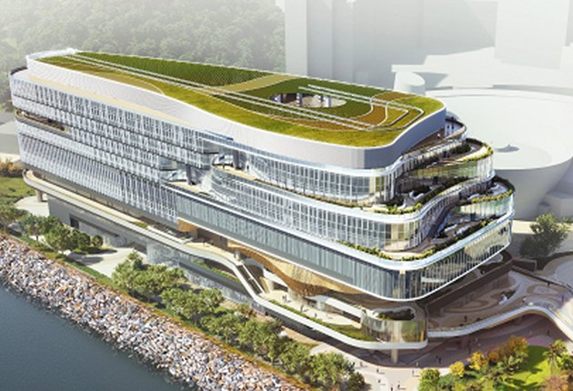
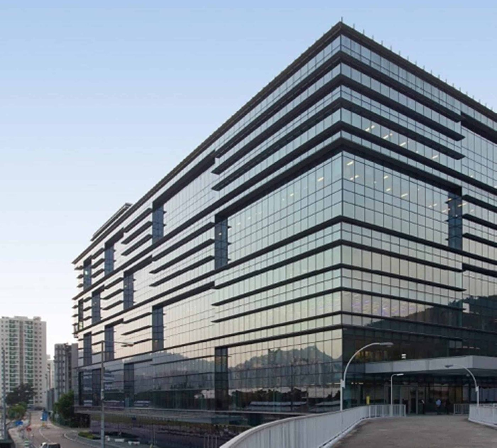
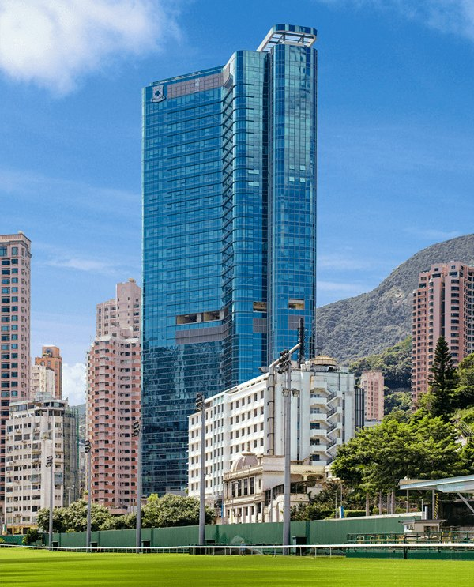

10,000+ use cases delivered since 2010. Below — a selected reference from every sector we serve, and the product series that carried each one.
One landmark engagement per sector — with the product series behind it. Selected highlights only; full references available on request.
The nerve centre of Hong Kong's e-government. Excel Unit supplied high-density fiber panels, pre-terminated MPO trunking and a TeraSPEED® OS2 backbone for the Government's consolidated data centre — engineered for round-the-clock public services.
One of Asia's great infrastructure undertakings — a third runway on 650 hectares of reclaimed land. Armored, outdoor-rated TeraSPEED® fiber engineered for salt, sun and jet blast, delivered airside under the strictest security regimes.
Also delivered: West Kowloon Cultural District & HK Palace Museum · Immigration Headquarters, Tseung Kwan O

Hong Kong's digital-technology flagship — TeraSPEED® OS2 with LazrSPEED® OM4 risers and NETCONNECT® Cat6A to every workspace, all LSZH-specified.
When the AI era needed fiber at a scale rarely shipped from Hong Kong, Excel Unit delivered. The fabric runs on CommScope's Propel™ modular platform with Propel XFrame™ high-density ODF frames — winner of the 2025 China IDC Industry Innovative Technology Product Award — fed by pre-terminated MPO trunks and LazrSPEED® OM4 for 400G/800G migration.
Asia's flagship exchange demands auditable change control on every port. Excel Unit supplied MPO trunking, TeraSPEED® OS2 and LazrSPEED® OM4 with imVision® automated infrastructure management — real-time port visibility in one of the most regulated environments in finance.
Also delivered: Bank of China, Fo Tan (MPO · OM4) · CLSA · Credit Suisse · HSBC · Microsoft · Equinix · NTT

Race-day peaks at Sha Tin — Propel™ platform with imVision® AIM, fed by pre-terminated MPO trunks over TeraSPEED® OS2 and LazrSPEED® OM4.
Two refresh cycles across JPMC's Hong Kong floors, delivered to banking-grade standards: GigaSPEED X10D® Cat6A channels to every desk on MGS400 modular jacks, with TeraSPEED® OS2 risers — installed around live operations under strict change windows.
For one of the world's most demanding trading firms, microseconds are money. GigaSPEED X10D® Cat6A channels and TeraSPEED® OS2 fiber delivered to hedge-fund-grade standards in Hong Kong's premier tower — engineered, documented and tested channel by channel.
Also delivered: Ernst & Young · China Everbright Bank · BNY Mellon
Bank-grade data centre cabling — pre-terminated MPO trunking and TeraSPEED® OS2 with full port-level documentation.
LazrSPEED® OM4 platform with pre-terminated assemblies for a rapid, low-risk fit-out.
One of Hong Kong's smartest corporate buildings runs its lighting, sensors and wireless over the network: GigaSPEED X10D® Cat6A carries PoE and Wi-Fi 6E backhaul on a TeraSPEED® OS2 riser backbone, terminated on SYSTIMAX panels floor by floor.
The camera-and-sensor layer of a smart entertainment campus: CCTV cabling on outdoor-rated Cat6 across the resort, plus the VIP-room renovation — infrastructure engineered to disappear into the magic.
Also delivered: International Commerce Centre (ICC) · New World Tower · Fidelity Hong Kong · AXA · DLA Piper
Hong Kong's largest retail-entertainment destination — 3.8M sq ft beside the airport — depends on NETCONNECT® copper for POS and high-density guest Wi-Fi, with fiber risers feeding digital signage and immersive attractions on every level.
Hong Kong's cultural-retail landmark — 1.2M sq ft of galleries, flagships and digital art on the Tsim Sha Tsui waterfront. High-density guest Wi-Fi, immersive signage and POS ride on NETCONNECT® copper with fiber risers throughout.
Also delivered: Starbucks Hong Kong (chain-wide infrastructure)
Hong Kong's new 50,000-seat stadium district runs every event on its ELV backbone. Excel Unit supplied SYSTIMAX® Cat6A and TeraSPEED® OS2 singlemode for IPTV, PA, security and venue operations — engineered for full-house peaks across the park.
Asia's biggest integrated resort keeps expanding — and Phase 3 runs its optical backbone through CommScope FiberGuide® raceway supplied by Excel Unit, protecting TeraSPEED® OS2 routes that feed gaming floors, suites and arenas, with GigaSPEED® copper at the edge.
Ultra-luxury at Victoria Dockside — Cat6A to every suite on a fiber backbone, delivered to five-star service standards where the network must be as flawless as the stay.
Also delivered: The Londoner® · The Venetian® & The Parisian Macao · Grand Lisboa Palace · Four Seasons Macao · The St. Regis · The Fullerton Ocean Park Hotel
Hong Kong's newest acute hospital campus. Excel Unit supplied the digital-signage backbone — fiber risers with GigaSPEED® Cat6A distribution to wards and displays throughout the new development.
Hong Kong's first Chinese medicine hospital — a landmark timber-lattice campus in Tseung Kwan O, wired with Cat6A and a TeraSPEED® OS2 ELV backbone delivered for opening day.
Also delivered: Hong Kong Children's Hospital · Kwong Wah Hospital Revamp · HKBH Kowloon East Medical Centre
Hong Kong's flagship teaching hospital modernised ward by ward — LSZH GigaSPEED X10D® Cat6A, TeraSPEED® OS2 risers and KRONE voice under Hospital Authority change control.

Hong Kong's leading private hospital — Cat6A and fiber for clinical and imaging systems.
Three engagements at the world's busiest cargo hub: the airport 5G fiber project, the HKIA Data Centre, and a standing maintenance contract — outdoor-rated and armored TeraSPEED® fiber, MPO trunking and FiberGuide® raceway, delivered airside under AAHK security regimes.
Also delivered: HKIA Data Centre · Airport 5G Fiber · Hong Kong SkyCity · Airport Maintenance Contract
Two campus-wide engagements at Hong Kong's top-ranked research university — a TeraSPEED® OS2 multi-building backbone with GigaSPEED X10D® Cat6A into teaching, laboratory and residential spaces, engineered for a decade of growth.
Also delivered: HKBU Jockey Club Campus of Creativity · Education University of HK · Lingnan University · CUHK Medical Building
International school campus — GigaSPEED® Cat6A to every classroom on a TeraSPEED® OS2 backbone.
Behind every flagship build is the same delivery engine: our engineering team, a 50,000 sq ft Kwai Chung warehouse, and 1M+ products held ex-stock for Hong Kong, Macau and Taiwan.
Photography via Wikimedia Commons: 11 SKIES © LN9267 (CC BY-SA 4.0) · Galaxy Macau © Brenden Brain (CC BY-SA 3.0) · HKUST © Hkust pao (CC BY-SA 3.0) · HKIA T1 © Diego Delso (CC BY-SA 3.0) · WKCD panorama © Baycrest (CC BY-SA 2.5). Other project imagery courtesy of the respective owners and projects.
BOM consultation, ring-fenced stock and tender-ready documentation — within one business day. 一個工作天內回覆。